|
|
Gr�cia
por Luiz Fernando Caldas Gomes
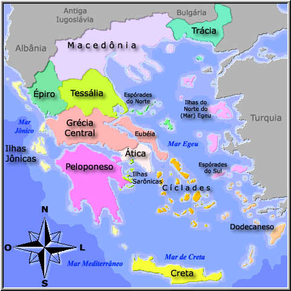
Mapa da Grecia
Antiga
Os Gregos
Nenhuma sociedade, nenhum povo � mais
racional ou criativo do que outro. Afinal, pertencemos todos a mesma
esp�cie, n�o � verdade? Por que ent�o os ocidentais veneram tanto os
gregos antigos? Um dos motivos � que somos herdeiros culturais dos
gregos. O idioma portugu�s est� cheio de palavras derivadas do
grego, como economia, pol�tica, biologia, hist�ria, f�sica, farm�cia
e biblioteca. Na escola, voc� estuda o teorema de Pit�gonas, a lei
de Arquimedes, a geometria de Euclides. Os atores de hoje encenam as
pe�as de teatro gregas antigas, que parecem falar dos mesmos
problemas dos homens e mulheres atuais. As aventuras de Ulisses,
personagem do poema de Homero, v�o para o cinema. As obras
filos�ficas de Plat�o s�o estudadas por cabe�as brilhantes do nosso
tempo. E a quem diga que a democracia nasceu em Atenas. Falar dos
gregos �, de certo modo, falar de n�s mesmos.
ORIGENS DA CIVILIZA��O
GREGA
Os
povos indo-europeus - aqueus, j�nios, e�lios, d�rios - come�aram a
chegar � Gr�cia, em sucessivas levas, volta do ano 2000 a.C. Por�m,
muito antes da chegada desses povos, a maior ilha grega do mar Egeu
- Creta - j� era habitada. Nela desenvolve-se uma brilhante
civiliza��o: a civiliza��o
cretense.
Por volta do
ano 3000 a.C., enquanto no Oriente M�dio, �s margens dos rios Nilo,
Tigre e Eufrates, os povos dedicavam-se � agricultura e � cria��o de
animais, na ilha de Creta os habitantes dedicavam-se ao com�rcio
mar�timo e criaram uma cultura
pr�pria.
Constitu�da
por um povo alegre, festivo e amante da liberdade, a civiliza��o
cretense produziu obras not�veis na pintura, na escultura e na
arquitetura, como os monumentais pal�cios, luxuosamente decorados.
Expandindo-se pelo
mar, os cretenses estabeleceram contato com outros n�cleos urbanos.
Do intenso contato entre cretenses e mic�nicos nasceu a civiliza��o
creto-mic�nica.
Aproximadamente em 1400 a.C., Creta foi invadida pelos aqueus, que
acabaram assimilando sua cultura. Quase dois S�culos depois, os
d�rios invadiram e ocuparam Creta. As cidades foram saqueadas e
arrasadas, levando � decad�ncia da civiliza��o
cretense.
Desde seus
primeiros povoamentos, havia em Creta pequenos governos locais.
S�culos depois, a ilha foi unificada sob o comando de uma monarquia
instalada na cidade de
Cnossos.
Os chefes que
se sucederam nessa monarquia eram chamados de minos. Essa palavra
deu origem � express�o civiliza��o min�ica, tamb�m utilizada para
designar a civiliza��o
cretense.
Minos vivia
no grande pal�cio de Cnossos, cercado de muitas salas luxuosas,
corredores, p�tios e oficinas. Eram tantos os aposentos - mais de
1500 c�modos - que esse pal�cio ficou conhecido, nas lendas gregas,
como o labirinto do
Minotauro.
A sociedade
cretense era predominantemente urbana. As ru�nas encontradas revelam
cidades bem planejadas, com ruas, cal�adas, sarjetas, lojas de
com�rcio e casas luxuosas. Destacavam-se, entre elas, Cnossos,
Fa�stos, M�lia e
Tilisso.
A maior parte
da popula��o das cidades dedicava-se ao com�rcio mar�timo ou �s
oficinas artesanais, vivendo modestamente e trabalhando para
sustentar o luxo das classes
altas.
Parece, no
entanto, que em Creta a vida das pessoas comuns era melhor que a de
outras comunidades da Antig�idade. V�rios aspectos demonstram
isso:
� A economia cretense, baseada no artesanato e no
com�rcio, proporcionava grande n�mero de ocupa��es e mais chances de
escolha de trabalho.
� Em Creta existiam poucos escravos, e
eles eram geralmente estrangeiros. A escravid�o n�o foi muito
importante para a vida econ�mica cretense.
� A liberdade
social das mulheres cretenses, liberdade n�o encontrada em outras
regi�es do mundo antigo, onde as mulheres eram semiescravas dos
homens. As obras de arte de Creta mostram mulheres passeando pelas
ruas, praticando jogos e dan�as, ocupando lugar de destaque nos
teatros e nos circos. Elas participavam, ao lado dos homens, de
esportes como touradas ou lutas. Havia ainda as sacerdotisas, mais
importantes do que os sacerdotes, que desempenhavam o papel
principal nas cerim�nias
religiosas.
Os
cretenses tinham uma economia rica e variada. Praticavam a
agricultura, criavam animais e produziam delicadas pe�as em cer�mica
ou metal (cobre, bronze, ouro e prata) nas in�meras oficinas
artesanais.
Mas foi no
com�rcio mar�timo que os cretenses mais se destacaram. Atrav�s dele,
toda a produ��o artesanal era vendida em diversas regi�es do mundo
antigo, como Egito e
Mesopot�mia.
Creta
dominou o com�rcio nos mar Egeu e Mediterr�neo, criando o primeiro
imp�rio comercial mar�timo do qual temos conhecimento
(aproximadamente dois mil anos antes dos fen�cios). A esse imp�rio
d�-se o nome de talassocracia, palavra composta dos termos gregos
talassos, que significa mar, e cracia, que significa
poder.
Os povos
indo-europeus estabeleceram-se em diferentes regi�es da Gr�cia.
Atra�dos pelo esplendor da civiliza��o cretense, esses povos foram
aos poucos conquistando seu territ�rio, at� domin�-la completamente
� Aqueus - chegaram por volta de 200 a.C. e fundaram as
cidades de Micenas, Tirinto e Argos. Conquistaram os cretenses e
assimilaram parte de sua cultura. Da integra��o cultural entre
cretenses e aqueus surgiu a chamada civiliza��o
creto-mic�nica.
� J�nios - chegaram por volta de 1700 a.C. e
fundaram Atenas. Posteriormente, expandiram-se em dire��o � �sia
Menor e fundaram outras cidades, como Mileto, �feso e
Esmirna.
� E�lios - Chegaram por volta de 1700 a.C. e
fundaram a cidade de Tebas. Integraram-se no contexto da civiliza��o
creto-mic�nica.
� D�rios - chegaram por volta de 1200 a.C. e
fundaram Esparta. De esp�rito guerreiro, destru�ram grande parte da
civiliza��o creto-mic�nica.
Evolu��o pol�tica econ�mica
A Gr�cia Antiga, na
verdade, n�o possu�a uma unidade pol�tica, ou seja, n�o constitu�a
um Estado ou Imp�rio �nico. Era formada por diversas cidades
independentes, com governos pr�prios. Algumas dessas cidades
conseguiram impor seu dom�nio sobre as
demais.
Para facilitar
o estudo da hist�ria da Gr�cia, que � longa e complexa, costuma-se
dividi-la em quatro grandes per�odos. Vejamos esses per�odos que
retratam o apogeu e decad�ncia da civiliza��o grega.
O PER�ODO HOM�RICO
As principais fontes hist�ricas de informa��es sobre
o per�odo entre a invas�o d�rica e a organiza��o das g�nos foram os
poemas atribu�dos a Homero, Il�ada e Odiss�ia. O primeiro trata da
Guerra de Tr�ia e do modo de vida dos gregos naquele momento; a
Odiss�ia fala do retorno dos her�is da guerra e da viagem de
Ulisses.
Com a invas�o
d�rica, ocorreu um retrocesso da produ��o material e cultural da
regi�o. O ativo com�rcio desapareceu e as cidades foram abandonadas.
Houve um retorno ao campo e � vida rural; a sociedade voltou a
organizar-se em padr�es mais
simples.
A sociedade
grega neste per�odo hom�rico passou a se organizar em g�nos (ou
gens, esp�cie de cl�s), por isso a chamamos de sociedade gent�lica.
A g�nos era uma comunidade formada por uma grande fam�lia, chefiada
pelo patriarca. Esses agrupamentos sociais conseguiam assegurar sua
sobreviv�ncia mediante uma atividade coletiva, ou seja, o trabalho,
os bens e a produ��o eram propriedade de
todos.
A sociedade
gent�lica desapareceu por diversos motivos. Naquele per�odo a
produ��o coletiva n�o foi capaz de acompanhar o aumento da
popula��o, gerando a fome. Diante desse quadro, os chefes de fam�lia
e seus descendentes diretos acabaram acumulando as melhores terras,
formando uma pequena aristocracia comandada pelo basileu (uma
esp�cie de chefe militar-religioso), que foi se desenvolvendo com o
tempo.
A maioria
empobrecida voltou-se para a atividade artesanal ou ent�o
deslocou-se para outras regi�es em busca de novas terras. Toda essa
grave situa��o gerou in�meras disputas por terras entre as tribos,
dando condi��es para o restabelecimento da escraviza��o das tribos
vencidas.
Esse
processo de desagrega��o das sociedades gent�licas e de reuni�o das
g�nos resultou na forma��o das cidades-Estados gregas.
GUERRA DE TR�IA
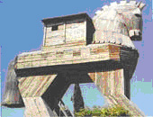
Cavalo de Tr�ia (reprodu��o): um presente de grego
A Guerra de Tr�ia foi um conflito b�lico entre aqueus (um dos
povos gregos que habitavam a Gr�cia Antiga) e os troianos, que
habitavam uma regi�o da atual Turquia. Esta aproximadamente 10 anos,
aconteceu entre 1300 e 1200 a.C. guerra.
Causa da
guerra
Gregos e troianos entraram em guerra por causa do rapto da
princesa Helena de Tr�ia (esposa do rei lend�rio Menelau), por P�ris
(filho do rei Pr�amo de Tr�ia). Isto ocorreu quando o pr�ncipe
troiano foi � Esparta, em miss�o diplom�tica, e acabou
apaixonando-se por Helena. O rapto deixou Menelau enfurecido,
fazendo com que este organiza-se um poderoso ex�rcito. O general
Agamenon foi designado para comandar o ataque aos troianos. Usando o
mar Egeu como rota, mais de mil navios foram enviados para
Tr�ia.
A Guerra
O cerco grego � Tr�ia durou cerca de 10 anos. V�rios soldados
foram mortos, entre eles os her�is gregos Heitor e Aquiles (morto
ap�s ser atingido em seu ponto fraco, o calcanhar).
A guerra
terminou ap�s a execu��o do grande plano do guerreiro grego Odisseu.
Sua id�ia foi presentear os troianos com um grande cavalo de
madeira. Disseram aos inimigos que estavam desistindo da guerra e
que o cavalo era um presente de paz. Os troianos aceitaram e
deixaram o enorme presente ser conduzido para dentro de seus muros
protetores. Ap�s uma noite de muita comemora��o, os troianos foram
dormir exaustos. Neste momento, abriram-se portas no cavalo de
madeira e sa�ram centenas de soldados gregos. Estes abriram as
portas da cidade para que os gregos entrassem e atacassem a cidade
de Tr�ia at� sua destrui��o.
Os eventos finais da guerra s�o contados na obra Il�ada de
Homero. Sua outra obra po�tica, Odiss�ia, conta o retorno do
guerreiro Odisseu e seus soldados � ilha de �taca.
Mito ou fato hist�rico?
Durante muitos s�culos, acreditava-se que a Guerra de Tr�ia fosse
apenas mais um dos mitos da mitologia grega. Por�m, com a descoberta
e estudo de um s�tio arqueol�gico na Turquia, pode-se comprovar que
este importante fato hist�rico da antiguidade realmente ocorreu.
Por�m, muitos aspectos entre mitologia e hist�ria ainda n�o foram
identificados e se confundem. Mas o que se sabe � que esta guerra
ocorreu de fato.
PER�ODO ARCAICO
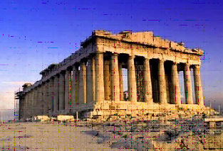
Cidade-Estado
No per�odo arcaico � onde observamos o
processo final das transforma��es sofridas pelas comunidades
gent�licas gregas. Deixando de adotar o uso coletivo da terra,
come�ava a aparecer dentro dos genos uma classe de propriet�rios de
terra. Em sua grande maioria, essa classe aristocr�tica esteve
intimamente ligada aos pater, o l�der patriarcal presente em cada
uma dessas comunidades.
Essa nova classe social, tamb�m A
conhecida como eup�tridas (filhos do pai ou bem-nascidos) formou
um restrito grupo de propriet�rios de terra que ir�o mobilizar-se em
busca da manuten��o de suas posses. Os genos passavam a reunir-se em
fratrias e tribos controladas pela domina��o da nova aristocracia
grega. Nessa �poca, al�m da hegemonia pol�tica dos eup�tridas,
notamos que o aumento da popula��o causou um grande problema com
rela��o ao acesso �s terras produtivas.
As popula��es exclu�das no processo de apropria��o das terras se
viram obrigadas a buscar outras regi�es onde fosse poss�vel buscar
melhores condi��es de vida. A migra��o dessas popula��es gregas para
regi�es marcou a chamada Segunda Di�spora Grega. Ocorrida em 750
a.C., essa di�spora ampliou os territ�rios do mundo grego e criou
uma importante rede de com�rcio de g�neros agr�colas entre as
comunidades gregas.
A consolida��o do poder pol�tico nas m�os da aristocracia junto
com a amplia��o das atividades econ�micas deu condi��es para o
aparecimento de um novo espa�o de representa��o s�cio-pol�tica na
Gr�cia: a cidade-estado. As cidades-estado consistiam em n�cleos
urbanos onde importantes decis�es pol�ticas e o tr�nsito de
mercadorias acontecia.
Com sua consolida��o temos o surgimento de diferentes
cidades-Estado compostas por pr�ticas sociais, pol�ticas e culturais
distintas entre si. De tal maneira, o que observamos dentro do mundo
grego ser� uma configura��o pol�tica descentralizada. As diferen�as
de organiza��o no mundo grego ser�o notadas com grande destaque
quando estudamos, por exemplo, as diferen�as entre as cidades-Estado
de Esparta e Atenas.
PER�ODO CL�SSICO
O per�odo conhecido
como Gr�cia Cl�ssica corresponde ao apogeu da cultura grega
(principalmente de Antenas), interrompido pela conquista maced�nica,
mas abrange tamb�m acontecimentos como as guerras externas (contra
os persas) e internas (Atenas x
Esparta).
Os conflitos
entre os persas e os gregos (as guerras greco-p�rsicas ou m�dicas)
ocorreram basicamente em raz�o do expansionismo persa, que j� havia
atingido a �sia Menor e amea�ava a Gr�cia e seus dom�nios na
regi�o.
Os persas e os
medos s�o povos de origem indo-europ�ia, de caracter�sticas
semin�mades, que se estabeleceram na �sia (no atual territ�rio do
Ir�) por volta de 2000
a.C.
Em 559 a.C.,
chefiados por Ciro, os persas venceram os medos, ap�s anos de
submiss�o, e partiram a conquista dos ass�rios, j� em franca
decad�ncia.
Esse foi o
in�cio da forma��o de um grande imp�rio que atingiu na �sia Menor,
Egito, Fen�cia, Mesopot�mia e parte da
Gr�cia.
Dario assumiu
o poder (521-484 a.C.) e comandou a expans�o e constru��o do imp�rio
Persa. Ele centralizou a administra��o do imp�rio criando v�rias
�reas administrativas (satrapias) gerenciadas pelos s�trapas ("os
olhos e os ouvidos do rei"), fez com que fossem constru�das in�meras
vias de comunica��o e concentrou o poder em suas
m�os.
As guerras
contra a Gr�cia come�aram devido � pol�tica expansionista de Dario
I.
As guerras tiveram
in�cio quando a cidade de Mileto, localizada na �sia Menor,
revoltou-se contra o dom�nio persa e buscou a ajuda de Atenas. Dario
I, rei da P�rsia, aproveitou-se do fato para declarar guerra a
Atenas, iniciando a primeira guerra m�dia (os gregos chamavam os
persas de medos, por isso o nome m�dicas). Essa guerra foi vencida
por Atenas, sob a lideran�a de Milc�ades, na batalha de Maratona
(490 a.C.).
A derrota
persa enfraqueceu o Imp�rio, que s� teve condi��es de iniciar a
segunda guerra em 480 a.C., com o filho de Dario, Xerxes. Na
primeira derrotados. No ano seguinte voltaram a atacar Atenas,
alcan�ando a vit�ria e destruindo parte da cidade; mas sua frota foi
incendiada em Salamina. Gra�as a uma alian�a de outras cidades
gregas lideradas por Esparta, o ex�rcito persa foi derrotado quando
se retirava por terra.
Com a justificativa de se prevenir de novos ataques externos, Atenas
organizou uma grande alian�a mar�tima entre diversas cidades gregas,
chamada de Confedera��o de Delos. O acordo estabelecia a
independ�ncia pol�tica e ,militar das cidades, mas elas eram
obrigadas a contribuir com navios, dinheiro e soldados. Levaram
ent�o a guerra �s costas da �sia, e os persas perderam suas
possess�es na �sia Menor. Como centro da Confedera��o, Atenas foi
muito beneficiada, impulsionando sua economia e cultura. Come�ava
assim a hegemonia ateniense e seu per�odo de
apogeu.
A cidade de
Atenas atingiu seu apogeu no s�culo V a.C. durante o governo de
P�ricles. No seu governo de 461 a 429 a.C., o escravismo chegou ao
auge, dando condi��es econ�micas para o desenvolvimento da
cidade.
As reformas
pol�ticas de P�ricles ampliaram a democracia ateniense, permitindo
uma maior participa��o dos cidad�os mais pobres nas assembl�ias e
nas decis�es de governo. Com rela��o � pol�tica externa, ele
conseguiu estabelecer um grande tratado de paz com a
P�rsia.
A cidade foi
reurbanizada e embelezada; foram constru�dos grandes monumentos; a
produ��o art�stica e liter�ria da �poca � fant�stica. Por tudo isso,
o s�culo V a.C. � conhecido como a idade de
ouro.
Para se
contrapor � hegemonia de Atenas, baseada na Confedera��o de Delos,
esparta organizou v�rias cidades na Liga do Peloponeso. Essa luta
pelo poder na regi�o acabou desencadeando a Guerra do Peloponeso
(431-404 a.C.).
Ap�s
in�meras batalhas entre as duas alian�as lideradas por Esparta e
Atenas, finalmente os espartanos sa�ram vitoriosos em 404 a.C., com
a invas�o e destrui��o de Atenas. Isso significou o fim da hegemonia
de Atenas e, conseq�entemente, da democracia ateniense. A
aristocracia, aliada dos espartanos, voltou ao poder; Esparta
assumiu a lideran�a pol�tica da
Gr�cia.
O dom�nio
espartano n�o durou muito. Os conflitos internos eram constantes,
enfraquecendo o poder de Esparta. Em 371 a.C. ela teve que enfrentar
Tebas, sendo
derrotada.
At� 362
a.C. a cidade-Estado de Tebas manteve fragilmente seu poder. Nesse
ano foi derrotada por uma coliga��o de v�rias cidades gregas
liderada por Antenas e Esparta. Esses conflitos internos acabaram
enfraquecendo o mundo grego e decretando o fim da p�lis. Em 338 a.C.
Filipe II, rei da Maced�nia, regi�o ao norte da Gr�cia, conquistou
Tebas, iniciando o dom�nio maced�nico.
Guerras M�dicas
No decorrer de quase todo s�culo 5 a.C. duas grandes civiliza��es
se enfrentaram na regi�o do Mediterr�neo Oriental: a P�rsia e a
Gr�cia. Chamamos esse conflito de Guerras M�dicas, Guerras P�rsicas
ou Guerras Greco-Persas.
A principal causa dessas guerras foi a
luta pela independ�ncia das 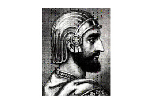cidades j�nicas,
col�nias gregas na Anat�lia (regi�o da atual Turquia), que os persas
em sua expans�o territorial passaram a dominar, comprometendo o
com�rcio grego no Oriente.
A vit�ria da Gr�cia garantiu-lhe o
controle comercial da regi�o, imortalizou seus her�is e imp�s ao
mundo o modelo ocidental de se fazer a guerra. A maior parte dos
historiadores divide os conflitos em duas fases: a 1 � Guerra
M�dica, em 490 a.C, e a 2 � Ciro, o Grande (560-530 a.C.), rei dos
medos e persas
Guerra M�dica, entre 480 e 479 a.C.. Mas, como as
rivalidades entre gregos e persas s� terminaram em 448 a.C., com a
Paz de C�lias, alguns estudiosos falam numa 3 � Guerra M�dica.
Ciro, o Grande (560-530 a.C.), rei dos medos e persas
O Imp�rio Persa
No in�cio do primeiro mil�nio a.C., os
indo-europeus ou arianos, povos origin�rios da regi�o que hoje
chamamos de R�ssia, se estabeleceram no planalto Iraniano. Dentre
eles, se destacaram os medos e os persas. Os medos, fortemente
militarizados, mantiveram o dom�nio sobre a regi�o.
Em 550 a.C., Ciro, o Grande, rei dos persas, conseguiu dominar o
Reino dos Medos e, a partir da�, expandiu seus dom�nios sobre a
Anat�lia (que englobava as cidades j�nicas) e a Mesopot�mia,
fundando o Imp�rio Persa, com todo poder centralizado em suas m�os.
Posteriormente o Imp�rio se tornou grandioso, chegando a dominar
desde o Egito at� o vale do rio Indo (na �ndia atual). Cada
indiv�duo dos povos submetidos pelo Imp�rio Persa era considerado um
bandaka (escravo do monarca).
Os gregos antigos n�o faziam distin��o entre os medos e os
persas, por isso terem dado o nome de Guerras M�dicas �s batalhas
travadas com o Imp�rio Persa.
A Gr�cia
Ao contr�rio da P�rsia, a H�lade, ou Gr�cia,
era formada por uma s�rie de cidades independentes que viviam em
constante rivalidade. Para se ter uma id�ia, um grego fora de sua
cidade natal era considerado estrangeiro, mesmo estando em uma
cidade grega vizinha a sua.
Cada cidade (p�lis) tinha seu pr�prio ex�rcito (falange) e sua
pr�pria organiza��o pol�tica, indo desde uma oligarquia conservadora
(Esparta � o maior exemplo) at� a democracia, uma inova��o pol�tica
de Atenas.
De qualquer maneira, independente da forma de governo adotada por
cada p�lis, os indiv�duos considerados cidad�os tinham ampla
liberdade de discuss�o nas quest�es pol�ticas e militares (mesmo que
o seu n�mero fosse reduzido, como por exemplo, em Esparta).
Essa liberdade de express�o (que os gregos chamavam de
parrhesia), era incomum na Antiguidade. Ao contr�rio da maioria das
civiliza��es da �poca, eram os cidad�os que discutiam sobre a
guerra, formavam suas falanges e escolhiam seus generais. Cada
indiv�duo lutava por seu ideal pol�tico, pela independ�ncia de sua
p�lis e pela sua pr�pria liberdade (os escravos gregos n�o eram
aceitos como militares).
Os ex�rcitos
Gregos e persas se
enfrentaram em v�rias batalhas, e na maior parte delas os persas
contavam com um ex�rcito e uma marinha de guerra numericamente muito
superior a dos gregos.
Estima-se que os persas dominavam uma popula��o de 70 milh�es de
habitantes, oriundos de diversas culturas, que ofereciam uma
quantidade enorme de soldados, com tipos de armamentos e t�ticas de
guerra pr�prios: persas e medos com suas armaduras de escamas de
ferro, ass�rios com capacetes de bronze, mosquianos com capacetes de
madeira, et�opes que se vestiam com peles de le�o, indianos que
usavam arcos, citas com os seus cavalos, dentre in�meros outros.
A mais importante unidade militar persa era chamada de "Os
Imortais": 10 mil homens (exclusivamente persas e medos), muito bem
preparados. Quando, um de seus membros tombava em combate,
prontamente era substitu�do por outro.
Mas esse imenso e diversificado ex�rcito causou muitos problemas
para o Imp�rio Persa nas guerras contra os gregos, pois a falta de
uma l�ngua comum, de treinamento em conjunto e de uma unidade de
comando foi a sua fraqueza, que os gregos souberam muito bem
explorar.
E mais: os combatentes eram obrigados a lutar em nome de um rei
intolerante, que os fazia ir para o campo de batalha debaixo de
chicotadas aplicadas por seus generais e sob amea�a de execu��o
sum�ria caso n�o obedecessem.
Ao contr�rio, apesar da extrema rivalidade entre as p�lis e das
muitas disc�rdias sobre onde e quando se travarem os combates, as
falanges gregas, quando decididas, lutavam sob uma voz de comando
que unificava todos os homens numa a��o coletiva.
Muito bem preparados (j� que as guerras eram comuns entre as
cidades-estado gregas e as falanges eram mantidas em constante
treinamento), lutavam em sincronia e tinham um objetivo muito claro:
a manuten��o de sua liberdade, j� que durante as Guerras M�dicas
eram os persas os invasores do solo hel�nico.
Os soldados gregos contavam com o seu general na frente de
batalha, o que os estimulava a continuar lutando, enquanto o
imperador persa ficava de fora, observando e punindo os que n�o
correspondiam a suas expectativas.
Era uma vergonha pra um grego fugir do combate, pois isso
significava que ele estaria desistindo do seu bem mais precioso: a
posse de suas terras, sua independ�ncia e liberdade pol�tica. Os
espartanos, conhecidos por sua cultura militarista, quando saiam em
suas campanhas militares, ouviam de suas m�es e esposas: "Volte com
seu escudo, ou sobre ele", pois os cad�veres dos gregos tombados em
combate eram devolvidos a suas fam�lias em cima de seus escudos.
"Batalha decisiva"
Mas a maior fa�anha grega era sua forma de guerrear, chamada
pelos historiadores de "batalha decisiva". A maioria das
civiliza��es do per�odo travava seus combates a certa dist�ncia,
usando arcos e proj�teis para amedrontar o inimigo. Era uma batalha
de provoca��es e escaramu�as.
Somente quando se tinha certeza da fragilidade do outro lado �
que as tropas avan�avam para o choque corpo a corpo. A falange
grega, ao contr�rio, avan�ava sobre o inimigo logo de in�cio,
decididos a obter a vit�ria rapidamente.
Essa t�tica grega era desconhecida e considerada irracional por
seus inimigos persas. Conta-se que muitos fugiam assustados com a
bravura dos gregos. O resultado de tal embate era mortal: a
viol�ncia grega era insuper�vel.
A pr�pria palavra que denomina as tropas gregas, falange,
significa "rolo", tamanha a velocidade de ataque e o poder de
aniquilamento que detinham. A id�ia era chegar ao inimigo o mais
r�pido poss�vel e pelo impacto causado pelas primeiras fileiras, ir
abrindo brechas no ex�rcito advers�rio e da� extermin�-lo.
A enorme quantidade de guerreiros persas n�o suportou a
determina��o militar e pol�tica dos poucos gregos, e foram vencidos.
O Imp�rio Persa acabou por desistir de conquistar a H�lade. Os
gregos mantiveram sua liberdade e passaram a atacar o territ�rio
persa, impondo ao mundo sua forma de fazer a guerra.
Guerra do Peloponeso
A Guerra do Peloponeso foi uma
luta de gregos contra gregos, motivada pelo conflito de interesses
econ�micos e pol�ticos entre as duas cidades gregas mais
importantes: Atenas e Esparta.
Nessa luta, a Confedera��o de
Delos, liderada por Atenas, enfrentou a Liga do Peloponeso,
organiza��o nascida da alian�a de diversas cidades olig�rquicas e
liderada por Esparta.
O conflito entre esses dois blocos de
cidades gregas se arrastou por 27 anos. Provocou a morte de milhares
de civis e terminou com a derrota de Atenas e suas aliadas.
Com
o t�rmino da Guerra do Peloponeso, chegou ao fim a hegemonia de
Atenas e teve in�cio a de Esparta, que se aproveitou disso para
impor seu dom�nio a toda a Gr�cia, o que provocou a revolta de
outras cidades.
Quando Alexandre morreu, o Imp�rio Maced�nico
foi dividido em tr�s grandes reinos: Reino do Egito, Reino da S�ria
e Reino da Maced�nia.
PER�ODO HELEN�STICO
O per�odo Helen�stico
compreende do s�culo III ao s�culo I
a.C.
Depois de tantos
anos de guerras internas, as cidades gregas estavam fracas e
empobrecidas. Aproveitando-se do decl�nio e da fragilidade das
cidades gregas, o rei Filipe da Maced�nia preparou um poderoso
ex�rcito para conquistar a Gr�cia.
A Batalha de
Queron�ia (338 a.C.) foi o marco decisivo da vit�ria dos maced�nios
sobre os gregos. Em 336 a.C., o sucessor de Filipe, seu filho
Alexandre Magno, assumiu o trono, dando continuidade � expans�o
militar maced�nica.
Alexandre sufocou definitivamente as revoltas das cidades gregas
(Tebas e Atenas) e, depois, partiu com um poderoso ex�rcito de mais
de 40 mil homens em dire��o ao Oriente. Obteve brilhantes vit�rias
militares na �sia Menor, no Egito, na Mesopot�mia, na P�rsia e em
regi�es da �ndia at� o vale do rio Indo. Em dez anos, Alexandre
Magno transformou o Imp�rio Maced�nio em um dos maiores de toda a
Antig�idade.
Em 323
a.C., Alexandre morreu na Babil�nia, v�tima de uma violenta febre
provocada pela mal�ria. O Imp�rio Maced�nio foi dividido entre os
principais generais que o acompanharam nas campanhas de conquista:
Seleuco, Ptolomeu e Ant�gono. Com o tempo, esses generais
tornaram-se reis das regi�es que comandavam e passaram a disputar
�reas do antigo Imp�rio Maced�nio. Posteriormente, a maioria dos
territ�rios acabou sendo dominada, pouco a pouco, pelos
romanos.
Caracter�sticas dos gregos
Religi�o grega
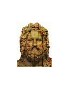
Na Gr�cia Antiga, as pessoas seguiam uma religi�o polite�sta, ou
seja, acreditavam em v�rios deuses. Estes, apesar de serem imortais,
possu�am caracter�sticas de comportamentos e atitudes semelhantes
aos seres humanos. Maldade, bondade, ego�smo, fraqueza, for�a,
vingan�a e outras caracter�sticas estavam presentes nos deuses,
segundo os gregos antigos. De acordo com este povo, as divindades
habitavam o topo do Monte Olimpo, de onde decidiam a vida dos
mortais. Zeus era o de maior import�ncia, considerado
a
divindade
seprema do pante�o grego. Acreditavam tamb�m que, muitas vezes, os
deuses desciam do monte sagrado para relacionarem-se com as pessoas.
Neste sentido, os her�is eram os filhos das divindades com os seres
humanos comuns. Cada cidade da Gr�cia Antiga possu�a um deus
protetor.
Cada entidade divina representava for�as da natureza
ou sentimentos humanos. Poseidon, por exemplo, era o representante
dos mares e Afrodite a deusa da beleza corporal e do amor. A
mitologia grega era passada de forma oral de pai para filho e,
muitas vezes, servia para explicar fen�menos da natureza ou passar
conselhos de vida. Ao invadir e dominar a Gr�cia, os romanos
absorveram o pante�o grego, modificando apenas os nomes dos
deuses.
Conhe�a abaixo uma rela��o das principais
divindades da Gr�cia Antiga e suas caracter�sticas.
Zeus - rei de
todos os deuses
Afrodite - amor
Ares - guerra
Hades -
Mortos
Hera - protetora das mulheres, do casamento e do
nascimento
mares e oceanos
Eros - amor, paix�o
Apolo
- luz do Sol, poesia, m�sica, beleza
masculina
Mitologia grega
Os gregos criaram v�rios mitos
para poder passar mensagens para as pessoas e tamb�m com o objetivo
de preservar a mem�ria hist�rica de seu povo. H� tr�s mil anos, n�o
havia explica��es cient�ficas para grande parte dos fen�menos da
natureza ou para os acontecimentos hist�ricos. Portanto, para buscar
um significado para os fatos pol�ticos, econ�micos e sociais, os
gregos criaram uma s�rie de hist�rias, de origem imaginativa, que
eram transmitidas, principalmente, atrav�s da literatura oral.
Grande parte destas lendas e mitos chegou at� os dias de
hoje e s�o importantes fontes de informa��es para entendermos a
hist�ria da civiliza��o da Gr�cia Antiga. S�o hist�rias riqu�ssimas
em dados psicol�gicos, econ�micos, materiais, art�sticos,
pol�ticos e culturais.
Entendendo a Mitologia Grega.
Os gregos antigos enxergavam
vida em quase tudo que os cercavam, e buscavam explica��es para
tudo. A imagina��o f�rtil deste povo criou personagens e figuras
mitol�gicas das mais diversas. Her�is, deuses, ninfas, tit�s e
centauros habitavam o mundo material, influenciando em suas vidas.
Bastava ler os sinais da natureza, para conseguir atingir seus
objetivos. A pitonisa, esp�cie de sacerdotisa, era uma importante
personagem neste contexto. Os gregos a consultavam em seus or�culos
para saber sobre as coisas que estavam acontecendo e tamb�m sobre o
futuro. Quase sempre, a pitonisa buscava explica��es mitol�gicas
para tais acontecimentos. Agradar uma divindade era condi��o
fundamental para atingir bons resultados na vida material. Um
trabalhador do com�rcio, por exemplo, deveria deixar o deus Hermes
sempre satisfeito, para conseguir bons resultados em seu
trabalho.
Os principais seres mitol�gicos da Gr�cia Antiga eram:
Her�is : seres mortais, filhos de deuses com seres humanos.
Exemplos : Her�cles ou H�rcules e Aquiles.
Ninfas : seres
femininos que habitavam os campos e bosques, levando alegria e
felicidade.
S�tiros : figura com corpo de homem, chifres e
patas de bode.
Centauros : corpo formado por uma metade de
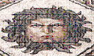homem e outra de cavalo.
Sereias : mulheres
com metade do corpo de peixe, atra�am os marinheiros com seus cantos
atraentes.
Medusa: mulher com serpentes na cabe�a.
O Minotauro
� um dos mitos mais conhecidos e j� foi tema de filmes, desenhos
animados, pe�as de teatro, jogos etc. Esse monstro tinha corpo de
homem e cabe�a de touro. Forte e feroz, habitava um labirinto na
ilha de Creta.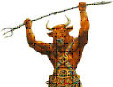 Alimentava-se de sete rapazes e sete
mo�as gregas, que deveriam ser enviadas pelo rei Egeu ao Rei Minos,
que os enviavam ao labirinto. Muitos gregos tentaram matar o
minotauro, por�m acabavam se perdendo no labirinto ou mortos pelo
monstro.
Certo dia, o rei Egeu resolveu enviar para a ilha de
Creta seu filho, Teseu, que deveria matar o minotauro. Teseu recebeu
da filha do rei de Creta, Ariadne, um novelo de l� e uma espada. O
her�i entrou no labirinto, matou o Minotauro com um golpe de espada
e saiu usando o fio de l� que havia marcado todo o caminho
percorrido.
Deuses gregos
De acordo com o gregos, os deuses
habitavam o topo do Monte Olimpo, principal montanha da Gr�cia
Antiga. Deste local, comandavam o trabalho e as rela��es sociais e
pol�ticas dos seres humanos. Os deuses gregos eram imortais, por�m
possu�am caracter�sticas de seres humanos. Ci�mes, inveja, trai��o e
viol�ncia tamb�m eram caracter�sticas encontradas no Olimpo. Muitas
vezes, apaixonavam-se por mortais e acabavam tendo filhos com estes.
Desta uni�o entre deuses e mortais surgiam os her�is.
Arte grega
Enquanto a arte eg�pcia � uma arte ligada ao esp�rito, a arte
grega liga-se � intelig�ncia, pois os seus reis n�o eram deuses, mas
seres inteligentes e justos que se dedicavam ao bem-estar do povo. A
arte grega volta-se para o gozo da vida presente. Contemplando a
natureza, o artista se empolga pela vida e tenta, atrav�s da arte,
exprimir suas manifesta��es. Na sua constante busca da perfei��o, o
artista grego cria uma arte de elabora��o intelectual em que
predominam o ritmo, o equil�brio, a harmonia ideal. Eles tem como
caracter�sticas: o racionalismo; amor pela beleza; interesse pelo
homem, essa pequena criatura que � �a medida de todas as coisas�; e
a democracia.
Arquitetura
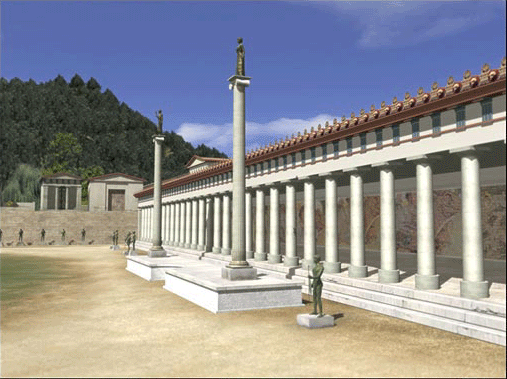 Stoa de
Ol�mpia
As edifica��es que despertaram maior interesse s�o os
templos. A caracter�stica mais evidente dos templos gregos � a
simetria entre o p�rtico de entrada e o dos fundos. O templo era
constru�do sobre uma base de tr�s degraus. O degrau mais elevado
chamava-se estil�bata e sobre ele eram erguidas as colunas. As
colunas sustentavam um entablamento horizontal formado por tr�s
partes: a arquitrave, o friso e a cornija. As colunas e entablamento
eram constru�dos segundo os modelos da ordem d�rica, j�nica e
cor�ntia.
- Ordem D�rica - era simples e maci�a. O fuste da
coluna era monol�tico e grosso. O capitel era uma almofada de pedra.
Nascida do sentir do povo grego, nela se expressa o pensamento.
Sendo a mais antiga das ordens arquitet�nicas gregas, a ordem
d�rica, por sua simplicidade e severidade, empresta uma id�ia de
solidez e impon�ncia
- Ordem J�nica - representava a gra�a e o
feminino. A coluna apresentava fuste mais delgado e n�o se firmava
diretamente sobre o estil�bata, mas sobre uma base decorada. O
capitel era formado por duas espirais unidas por duas curvas. A
ordem d�rica traduz a forma do homem e a ordem j�nica traduz a forma
da mulher.
- Ordem Cor�ntia - o capitel era formado com folhas
de acanto e quatro espirais sim�tricas, muito usado no lugar do
capitel j�nico, de um modo a variar e enriquecer aquela ordem.
Sugere luxo e ostenta��o.
Os principais monumentos da
arquitetura grega:
a) Templos, dos quais o mais importante
� o Partenon de Atenas. Na Acr�pole, tamb�m, se encontram as
Cari�tides homenageavam as mulheres de C�ria.
b) Teatros,
que eram constru�dos em lugares abertos (encosta) e que compunham de
tr�s partes: a skene ou cena, para os atores; a konistra ou
orquestra, para o coro; o koilon ou arquibancada, para os
espectadores. Um exemplo t�pico � o Teatro de Epidauro, constru�do,
no s�c. IV a.C., ao ar livre, composto por 55 degraus divididos em
duas ordens e calculados de acordo com uma inclina��o perfeita.
Chegava a acomodar cerca de 14.000 espectadores e tornou-se famoso
por sua ac�stica perfeita.
c) Gin�sios, edif�cios
destinados � cultura f�sica.
d) Pra�a - �gora onde os
gregos se reuniam para discutir os mais variados assuntos, entre
eles; filosofia.
Pintura
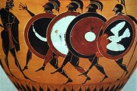 Hoplitas
A pintura grega encontra-se na arte cer�mica. Os vasos gregos s�o
tamb�m conhecidos n�o s� pelo equil�brio de sua forma, mas tamb�m
pela harmonia entre o desenho, as cores e o espa�o utilizado para a
ornamenta��o. Al�m de servir para rituais religiosos, esses vasos
eram usados para armazenar, entre outras coisas, �gua, vinho, azeite
e mantimentos. Por isso, a sua forma correspondia � fun��o para que
eram destinados:
- �nfora - vasilha em forma de cora��o,
com o gargalo largo ornado com duas asas;
- Hidra - (derivado de
ydor, �gua) tinha tr�s asas, uma vertical para segurar enquanto
corria a �gua e duas para levantar;
- Cratera - tinha a
boca muito larga, com o corpo em forma de um sino invertido, servia
para misturar �gua com o vinho (os gregos nunca bebiam vinho puro),
etc.
As pinturas dos vasos representavam pessoas em suas
atividades di�rias e cenas da mitologia grega. O maior pintor de
figuras negras foi Ex�quias.
A pintura grega se divide em tr�s
grupos:
1) figuras negras sobre o fundo vermelho
2) figuras vermelhas sobre o fundo negro
3)
figuras vermelhas sobre o fundo branco
Escultura
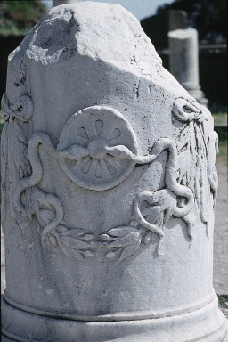Relevo dedicado a
Ascl�pio
A estatu�ria grega representa os mais altos padr�es j� atingidos
pelo homem. Na escultura, o antropomorfismo - esculturas de formas
humanas - foi insuper�vel. As est�tuas adquiriram, al�m do
equil�brio e perfei��o das formas, o movimento.
No Per�odo
Arcaico os gregos come�aram a esculpir, em m�rmores, grandes figuras
de homens. Primeiramente aparecem esculturas sim�tricas, em rigorosa
posi��o frontal, com o peso do corpo igualmente distribu�do sobre as
duas pernas. Esse tipo de est�tua � chamado Kouros (palavra grega:
homem jovem).
No Per�odo Cl�ssico passou-se a procurar movimento
nas est�tuas, para isto, se come�ou a usar o bronze que era mais
resistente do que o m�rmore, podendo fixar o movimento sem se
quebrar. Surge o nu feminino, pois no per�odo arcaico, as figuras de
mulher eram esculpidas sempre vestidas.
Per�odo
Helen�stico podemos observar o crescente naturalismo: os seres
humanos n�o eram representados apenas de acordo com a idade e a
personalidade, mas tamb�m segundo as emo��es e o estado de esp�rito
de um momento. O grande desafio e a grande conquista da escultura do
per�odo helen�stico foi a representa��o n�o de uma figura apenas,
mas de grupos de figuras que mantivessem a sugest�o de mobilidade e
fossem bonitos de todos os �ngulos que pudessem ser observados.
Os principais mestres da escultura cl�ssica grega s�o:
-
Prax�teles, celebrado pela gra�a das suas esculturas, pela l�nguida
pose em �S� (Hermes com Dion�sio menino), foi o primeiro artista que
esculpiu o nu feminino.
- Policleto, autor de Dor�foro -
condutor da lan�a, criou padr�es de beleza e equil�brio
atrav�s do tamanho das est�tuas que deveriam ter sete vezes e meia o
tamanho da cabe�a.
- F�dias, talvez o mais famoso de todos,
autor de Zeus Ol�mpico, sua obra-prima, e Aten�ia. Realizou toda a
decora��o em baixos-relevos do templo Partenon: as esculturas dos
front�es, m�topas e frisos.
- Lisipo, representava os homens
�tal como se v�em� e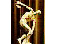 �n�o como s�o�
(verdadeiros retratos). Foi Lisipo que introduziu a propor��o ideal
do corpo humano com a medida de oito vezes a cabe�as.
- Miron,
autor do Disc�bolo - homem arremessando o disco. (figura)
Teatro Grego
Um dos aspectos mais significativos da cultura grega antiga
foi o teatro. Os gregos o desenvolveram de tal forma que at� os dias
atuais, artistas, dramaturgos e demais envolvidos nas artes c�nicas
sofrem a influ�ncia suas influ�ncias. Diversas pe�as teatrais
criadas na Gr�cia Antiga s�o at� hoje encenadas.
O teatro
grego surgiu a partir da evolu��o das artes e cerim�nias gregas
como, por exemplo, a festa em homenagem ao deus Dion�sio (deus do
vinho e das festas). Nesta festa, os jovens dan�avam e cantavam
dentro do templo deste deus, oferecendo-lhe vinho. Com o tempo, esta
festa come�ou a ganhar uma certa organiza��o, sendo representada
para diversas pessoas.
Durante o per�odo cl�ssico da hist�ria da
Gr�cia (s�culo V a.C.) foram estabelecidos os estilos mais
conhecidos de teatro: a trag�dia e a com�dia. �squilo e S�focles s�o
os dramaturgos de maior import�ncia desta �poca. A a��o, diversos
personagens e temas cotidianos foram representados nos teatros
gregos desta �poca.
Nesta �poca cl�ssica foram constru�dos
diversos teatros ao ar livre. Eram aproveitadas montanhas e colinas
de pedra para servirem de suporte para as arquibancadas. A ac�stica
(propaga��o do som) era perfeita, de tal forma que a pessoa sentada
na �ltima fileira (parte superior) podia ouvir t�o bem a voz dos
atores, quanto quem estivesse sentado na primeira fileira.
Os
atores representavam usando m�scaras e t�nicas de acordo com o
personagem. Muitas vezes, eram montados cen�rios bem decorados para
dar maior realismo � encena��o.
Os temas mais representados nas
pe�as teatrais gregas eram: trag�dias relacionadas a fatos
cotidianos, problemas emocionais e psicol�gicos, lendas e mitos,
homenagem aos deuses gregos, fatos her�icos e cr�ticas humor�sticas
aos pol�ticos. Os atores, al�m das m�scaras, utilizam muito os
recursos da m�mica. Muitas vezes a pe�a era acompanhada por m�sicas
reproduzidas por um coral.

Teatro de Epidauro
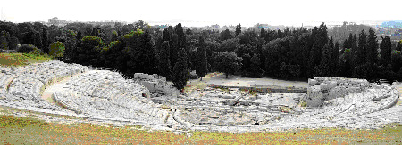
Ru�nas de um teatro grego de
Epidauro.
Filosofia grega
A filosofia tem uma hist�ria de mais
de dois mil e quinhentos anos. Foi na Gr�cia Antiga que esta ci�ncia
surgiu e tomou as primeiras propor��es. Embora vivessem em
cidades-na��es distintas e rivais entre si, os gregos conseguiram
desenvolver uma comunidade �nica de l�ngua, religi�o e cultura, que
foi respons�vel pelo grande avan�o da ci�ncia na Idade Antiga. A
genialidade grega foi respons�vel pelo avan�o de diversas �reas do
conhecimento, como artes, literatura, m�sica e filosofia.
A filosofia grega pode ser dividida em tr�s fases: per�odo
pr�-socr�tico, socr�tico e helen�stico. No per�odo pr�-socr�tico, a
Filosofia foi utilizada para explicar a origem do mundo e das coisas
ao redor. Os pr�-socr�ticos buscavam um princ�pio que deveria ser
presente em todos os momentos da exist�ncia de tudo. Os principais
fil�sofos dessa fase foram: Tales de Mileto, Her�clito, Anaximandro,
Xen�fanes e Parm�nides.
O per�odo socr�tico foi caracterizado pela mudan�a em rela��o ao
objeto de estudo da filosofia, passando da metaf�sica para o homem
em si. Esse car�ter antropol�gico se deu atrav�s dos tr�s principais
fil�sofos gregos: S�crates, Plat�o e Arist�teles.
O per�odo helen�stico compreende desde o final do S�culo III a.C
at� o S�c. II d.C. Essa fase foi marcada pela associa��o da vis�o
crist� � filosofia, passando a crer mais em solu��es individuais que
coletivas. Entre os fil�sofos deste per�odo, podemos citar: Marco
Aur�lio, S�neca, Ep�teto, Lucano, Pirro de Elis, Ant�stenes,
Di�genes de S�nope, etc.
Esportes
Foram os gregos que desenvolveram os Jogos
Ol�mpicos. Aconteciam de quatro em quatro anos na cidade grega de
Ol�mpia. Era uma homenagem aos deuses, principalmente a Zeus (deus
dos deuses). Atletas de diversas cidades gregas se reuniam para
disputarem esportes como, por exemplo, nata��o, corrida, arremesso
de disco entre outros. Os vencedores das Olimp�adas eram recebidos
em suas cidades como verdadeiros her�is.
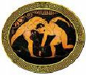
Principais cidades-Estado gregas
- ESPARTA

Esparta foi uma das principais polis (cidades-estado)
da Gr�cia Antiga. Situava-se geograficamente na regi�o sudeste da
Pen�nsula do Peloponeso.
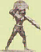Destacou-se no aspecto militar, pois foi fundada pelos
d�rios.
A cidade de Esparta foi fundada no s�culo IX a C pelo
povo d�rio que penetrou pela pen�nsula em busca de terras f�rteis.
Quatro aldeias da regi�o da Lac�nia uniram-se para formar a cidade
de Esparta. A cidade cresceu nos s�culos seguintes e o aumento
populacional fez com que os espartanos buscassem a amplia��o de seu
territ�rio atrav�s de guerras. No final do s�culo VIII aC, os
espartanos conquistaram toda a plan�cie da Lac�nia. Nos anos
seguintes, Esparta organizou a forma��o da Liga do Peloponeso,
reunindo o poderio militar de v�rias polis da regi�o, exceto a rival
Argos.
O poder militar de Esparta foi extremamente importante nas
Guerras M�dicas (contra os persas). Uniu-se a Atenas e outras
cidades para impedir a invas�o do inimigo comum. O ex�rcito
espartano foi fundamental na defesa terrestre (Atenas fez a defesa
mar�tima) durante as batalhas. Ap�s as Guerras M�dicas, a luta pela
hegemonia no territ�rio grego colocou Atenas e Esparta em posi��es
contr�rias. De 431 a 404, ocorreu a Guerra do Peloponeso entre
Atenas e Esparta, que foi vencida pelos espartanos.
Sociedade Espartana
Em Esparta a sociedade era estamental, ou seja,
dividida em camadas sociais onde havia pouca mobilidade. A sociedade
estava composta da seguinte forma:
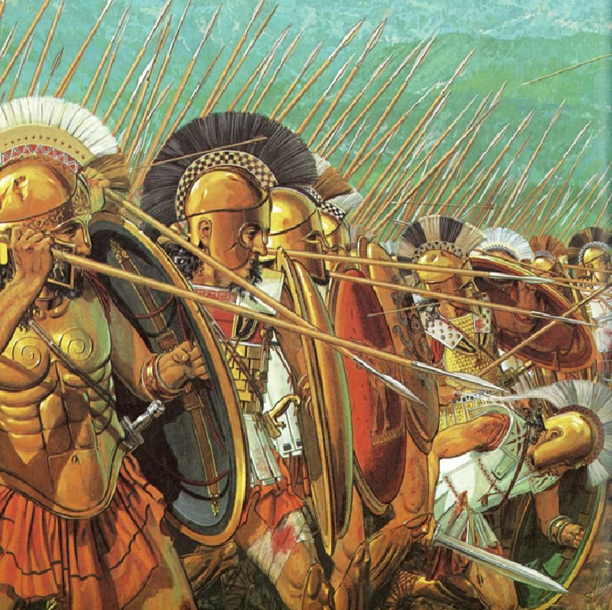Esparc�atas: eram os cidad�os de Esparta. Filhos de m�es e
pais espartanos, haviam recebido a educa��o espartana. Esta camada
social era composta por pol�ticos, integrantes do ex�rcito e ricos
propriet�rios de terras. S� os esparc�atas tinham direitos
pol�ticos.
Periecos: eram pequenos comerciantes e artes�os. Moravam na
periferia da cidade e n�o possu�am direitos pol�ticos. N�o recebiam
educa��o, por�m tinham que combater no ex�rcito, quando convocados.
Eram obrigados a pagar impostos.
Hilotas: levavam uma vida miser�vel, pois eram obrigados a
trabalhar quase de gra�a nas terras dos esparc�atas. N�o tinham
direitos pol�ticos e eram alvos de humilha��es e massacres. Chegaram
a organizar v�rias revoltas sociais em Esparta, combatidas com
extrema viol�ncia pelo ex�rcito.
Educa��o Espartana
O princ�pio da educa��o espartana era formar bons soldados para
abastecer o ex�rcito da polis. Com sete anos de idade o menino
esparc�ata era enviado pelos pais ao ex�rcito. Come�ava a vida de
prepara��o militar com muitos exerc�cios f�sicos e treinamento. Com
30 anos ele se tornava um oficial e ganhava os direitos pol�ticos. A
menina espartana tamb�m passava por treinamento militar e muita
atividade f�sica para ficar saud�vel e gerar filhos fortes para o
ex�rcito.
Pol�tica Espartana
Reis: a cidade era governada por dois reis que possu�am fun��es
militares e religiosas. Tinham v�rios privil�gios.
Assembl�ia: constitu�da pelos cidad�os, que se reuniam na Apella
(ao ar livre) uma vez por m�s para tomar decis�es pol�ticas como,
por exemplo, aprova��o ou rejei��o de leis.
Ger�sia: formada por vinte e oito gerontes (cidad�os com mais de
60 anos) e os dois reis. Elaboram as leis da cidade que eram votadas
pela Assembl�ia.
�foros: formado por cinco cidad�os, tinham diversos poderes
administrativos, militares, judiciais e pol�ticos. Atuavam na
pol�tica como se fossem verdadeiros chefes de governo.
Religi�o Espartana
Assim como em outras cidades da Gr�cia Antiga, em Esparta a
religi�o era polite�sta (acreditavam em v�rios deuses). Arque�logos
encontraram diversos templos nas ru�nas de Esparta. Atena (deusa da
sabedoria) era a mais cultuada na cidade.
- P�RGAMO
A cidade de P�rgamo � a
soma dos tra�os residuais trazidos dos per�odos anteriores � Era
Helen�stica (acr�pole: parte mais antiga da cidade) com novos planos
urbanos (cidade mediana), que constitu�am a express�o direta de uma
sociedade essencialmente mercantil. O enfoque urban�stico principal
da pesquisa se d� no contexto da cidade helen�stica.
P�rgamo,
cidade rica e antiga da �sia Menor situada pr�ximo � costa ocidental
da �sia Menor, em M�sia (agora Turquia), mais tarde capital do reino
de P�rgamo (241-133 a.C).
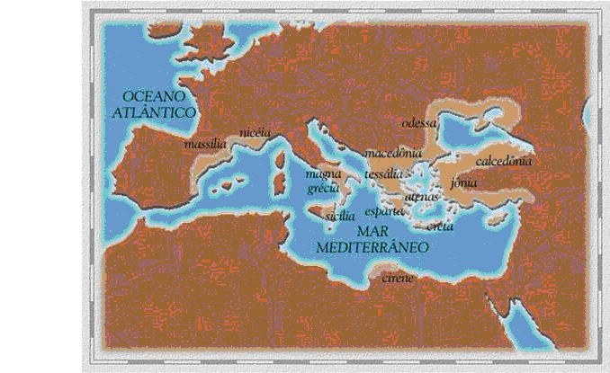
Pol�tica
Adquiriu import�ncia por volta do s�culo III a.C.
com a chegada da Era Helen�stica. Foi governada pela dinastia dos
At�lidas antes do dom�nio de Roma (133
a.C.):
�
�talo I S�ter (269-197 a.C.), rei de P�rgamo na �sia Menor, sucedeu
seu primo Eum�nio I (241 a.C.). Depois de vencer os g�latas e seu
aliado, o sel�ucida Ant�oco Hierax (em 228 a.C.), tornou P�rgamo o
Estado mais importante da �sia
Menor.
�
�talo II Filadelfo (220-138 a.C.), rei de P�rgamo, sucessor de seu
irm�o Eum�nio II (em 160 a.C.). Pupilo do fil�sofo Carn�ades, a quem
dedicou um portal (stoa), atualmente reconstru�da, na �gora
ateniense.
Cultura
Foi cidade rival liter�ria de
Alexandria nos s�culos III e II a.C., onde existiu um s�rio grupo de
pesquisadores. Esses homens estudavam gram�tica, cr�tica liter�ria,
arte e filosofia. Um dos eruditos mais proeminentes de P�rgamo foi
Crates de Malo que favoreceu as interpreta��es aleg�ricas, e n�o
literais, dos trabalhos de Homero.
Constru��es importantes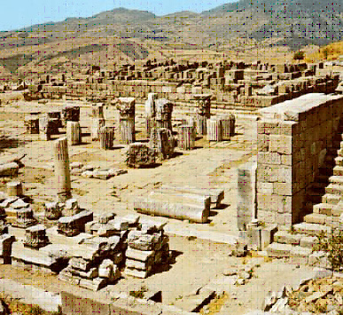
A antiga cidade de P�rgamo foi um importante centro da
cultura grega, possuindo uma grande biblioteca e um altar dedicado a
Zeus, tipologias arquitet�nicas novas (Era Helen�stica), como os
gin�sios e os edif�cios para o Senado, profusamente decorados e
realizados na ordem cor�ntia.
Plano Urban�stico
Com a chegada da Dinastia dos At�lidas era grande o interesse
em desintegra��o a sociedade, j� que era conhecida justamente por
quatro caracteres: a unidade (n�o existem zonas fechadas e
independentes, e em algumas �reas toda a popula��o ou grande parte
dela pode reunir-se e reconhecer-se como urna comunidade org�nica),
a articula��o (cidade se divide em tr�s zonas: as �reas privadas
ocupadas por casas de moradia; as �reas sagradas, que s�o recintos
com os templos dos deuses; e as �reas p�blicas, destinadas �s
reuni�es pol�ticas, ao com�rcio, ao teatro, aos jogos desportivos,
etc), o equil�brio com a natureza (respeita as linhas gerais da
paisagem natural, que em muitos pontos significativos � deixada
intacta, interpreta-a e integra-a, com os manufaturados
arquitet�nicos), e o limite de crescimento (o crescimento da
popula��o n�o produz uma amplia��o gradativa, mas a adi��o de um
outro organismo equivalente ou mesmo maior que o primitivo). Esta
desarticula��o veio atrav�s do plano urbano da seguinte
maneira:
� Introdu��o da
�gora (ver anexo 1) para o fortalecimento do com�rcio, o que
produziu uma laboriosa classe m�dia, acostumada aos confortos e
luxos f�sicos, que por muito tempo n�o tiveram, tirando as aten��es
dos cidad�os da vida pol�tica e ainda fez com que a cidade estivesse
sempre cheia de mercadores
estrangeiros.
� Um extenso
programa de constru��o e embelezamento da cidade para mascarar o
sistema de arregimenta��o e explora��o, mostrando desta forma o
poder da monarquia
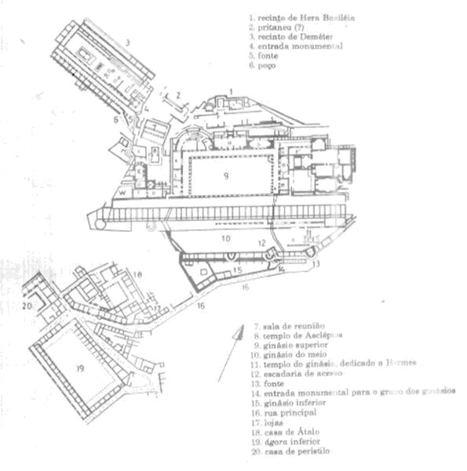
Planta da Cidade Mediana de P�rgamo.
EPIDAURO
Era uma cidade da Gr�cia antiga, situada na
Arg�lida, �s margens do Mar Egeu e c�lebre pelo santu�rio de
Escul�pio, deus da Medicina, que atra�a doentes de todo o mundo. Seu
teatro ao ar livre est� bem conservado. Fundada pelos j�nicos, foi
ocupada pelos d�ricos e aliou-se a Esparta, perdendo sua import�ncia
com o desenvolvimento da cidade de Egina, na ilha de mesmo nome.
Decaiu com a conquista romana.
Anfiteatro de Epidauro
Famoso
tamb�m � o Anfiteatro de Epidauro, dos maiores de seu tipo e de seu
tempo, possu�a uma ac�stica considerada perfeita para a �poca,
reproduzindo com precis�o e, principalmente, de forma aud�vel, mesmo
o som de um alfinete jogado ao ch�o, que podia ser ouvido mesmo nas
�ltimas bancadas.
Hist�ria
Epidauro � citada no Cat�logo de navios (na
sec��o que se encontra no canto II da Il�ada de Homero) com,
Epidauro dos bons vinhedo.Nos s�culos VII a.C. e VI a.C., pertencia
� anfictionia chamada dos Minianos, cuja fixa��o era na ilha de
Calauria. Em finais do s�culo VI a.C., era governada pelo tirano
Procles, que deu sua filha Melisa em casamento a Periandro, tirano
de Corinto. Periandro atacou Epidauro e fez prisioneiro Procles
conquistando a cidade. Depois da tirania voltou a oligarquia. 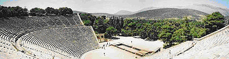
Na �poca hist�rica, oligarcas
d�ricos continuaram a ser os dirigentes da cidade, que era uma das
principais cidades comerciais do Peloponeso. Epidauro colonizou
Egina, que durante muito tempo foi uma depend�ncia. Tamb�m colonizou
C�s, Calimnos (Calidnos) e Nisiros, mas quando o com�rcio cresceu,
Egina aumentou a sua import�ncia e suplantou a metr�pole no s�culo
VI a.C.
Epidauro foi sempre fiel aliada de Esparta enquanto que
com a sua metr�pole, Argos, rompeu rela��es depois da instaura��o
nesta cidade da democracia. A cidade de Epidauro era governada por
artinos (artynae) que presidiam um conselho de 180 membros; os
habitantes originais n�o d�rios eram os konipodes que trabalhavam a
terra para os seus amos d�rios, mas n�o eram escravos.
Nas
Guerras M�dicas, a cidade enviou oito navios para a Batalha de
Artemisio, 800 homens para Platea e 10 barcos para Salamina. Ao
terminar a guerra, Salamina aliou-se com Esparta e entrou na Liga do
Peloponeso, contra Atenas e a confedera��o de Delos. Tomou parte no
assunto de Corcira e proporcionou trirremes a Corinto.
Epidauro constituiu um ponto nevr�lgico do confronto entre Atenas e
Esparta.
Em 419 a.C., durante a Guerra do Peloponeso, os argivos
tentaram conquistar a cidade, mas foram repelidos.
J� na �poca
cl�ssica, Epidauro gozou de um grande prest�gio gra�as ao seu
santu�rio consagrado a Escul�pio, onde se praticava a medicina pela
interpreta��o dos sonhos. Compreendia v�rios edif�cios p�blicos,
entre os quais havia um grande templo construido no s�culo IV a.C..
Em honra de Escul�pio se organizavam as Asklepieia, Jogos
Pan-hel�nicos pent�tericos que compreendia corridas de cavalo e, a
partir do s�culo IV, concursos de poesia. O culto de Escul�pio teve
o seu apogeu na �poca helen�stica.
Em 243 a.C., Epidauro reuniu a
Liga Aqueia. No Ver�o de 225 a.C. foi tomada por Cle�menes III, rei
de Esparta. Converteu-se em aliada da Rep�blica de Roma.
Sob
dom�nio romano tinha perdido toda a import�ncia e era praticamente o
porto do templo de Escul�pio. Paus�nias d� uma lista de seus
edif�cios principais: o templo de Atena Cisea na acr�pole, o templo
de Dion�sio, o de Artemisa, o de Afrodite, e talvez o de Escul�pio;
e o de Hera no porto, provavelmente no actual Cabo
Nicolau.
Na cidade havia tamb�m gin�sio, palestra, teatro,
constru�do aproveitando a vertente de uma montanha, com um di�metro
de 112 metros e 32 filas de assentos na parte baixa, 20 na parte
central e 24 na superior, com capacidade para 12.000 espectadores e
o prosc�nio.
Cipi�o Emiliano visitou-a em 168-167 a.C., na mesma
�poca que outros grandes lugares do helenismo, como Atenas, Delfos e
Ol�mpia. Em 87 a.C., � arrasada por Silas, que saqueou o tesouro do
templo. A �ltima men��o de Epidauro remonta ao s�culo VI, no
Synekdemos de Hier�cles, uma obra que descreve as divis�es
administrativas do Imp�rio Bizantino.
OL�MPIA
Cidade da antiga Gr�cia, � famosa por ter sido o local onde
se realizavam os Jogos Ol�mpicos da antiguidade at� sua supress�o em
394 pelo imperador Teod�sio I, tendo na altura uma import�ncia
compar�vel � de Delfos, onde se realizavam os Jogos P�tios. Ol�mpia
tamb�m � conhecida pela gigantesca est�tua de Zeus em marfim e ouro,
criada pelo escultor F�dias para o templo do deus, e que foi uma das
sete maravilhas do mundo antigo. Hoje o local preserva um
important�ssimo s�tio arqueol�gico tombado pela UNESCO.
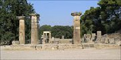
As ru�nas
do Templo de Hera
Pr�-hist�ria
Foram encontrados vest�gios de alimentos e oferendas
incineradas datando do s�culo X a.C., evidenciando uma longa
hist�ria de ocupa��o humana no local, embora n�o tenham restado
tra�os de edifica��es desta �poca remota.
Per�odos Geom�trico e Arcaico
O primeiro festival Ol�mpico foi organizado
pelas 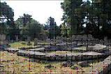autoridades de Elis no s�culo VIII a.C. com os
primeiros Jogos Ol�mpicos sendo realizados, de acordo com a
tradi��o, em 776 a.C.. Em torno de 700 a.C. foram feitas reformas no
terreno, nivelando �reas e cavando canais, �poca em que o santu�rio
caiu nas m�os dos pisatanos, que continuaram a realizar os Jogos at�
o fim do s�culo.
O Bouleterion
Os primeiros edif�cios foram constru�dos em torno de 600
a.C., quando os skiludianos, aliados dos pisatanos, ergueram o
Templo de Hera, seguido pelos Tesouros e pelo Pelopion, e tamb�m
pelas estruturas profanas das arenas e do Bouleterion. O primeiro
est�dio foi constru�do em torno de 560 a.C. como uma simples faixa
de terra, que foi remodelada cerca de 60 anos depois com a adi��o de
eleva��es laterais para os espectadores. Em 580 a.C. Elis, em
alian�a com Esparta, reconquistou o santu�rio.
Per�odo Cl�ssico
Este foi o per�odo em que Ol�mpia conheceu seu
esplendor. Entre os s�culos V e IV a.C. foram erguidos uma s�rie de
novos edif�cios sacros e seculares, incluindo o Templo de Zeus,
cujas propor��es e decora��o atingiram uma magnific�ncia at� ent�o
inaudita. Tamb�m as estruturas desportivas foram ampliadas e
completadas. O Pritaneu foi levantado em 470 a.C., o Metroon em 400
a.C., e a Stoa Eco na mesma �poca.
O Philippeion
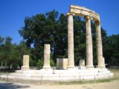
O final do s�culo IV a.C. viu o surgimento do Philippeion, e logo
em seguida do maior edif�cio do local, o Leonidaion, para receber
visitantes ilustres. Nos dois s�culos seguintes apareceram a
Palestra, o Gymnasion, as casas de banhos e a Cripta, uma passagem
de arcos ligando a entrada do santu�rio ao est�dio.
O Templo de Zeus
O Templo de Zeus em Ol�mpia (ou Olympieum)
era o centro religioso do local e foi constru�do entre 470 a.C. e
456 a.C. pelo arquiteto Libon de Elis. Foi constu�do na ordem d�rica
e tinha seis colunas frontais e treze de cada lado, e �nica entrada
era na fachada oriental, � qual se tinha acesso por uma grande
rampa. Os pedimentos mostravam a corrida de bigas entre P�lops,
criador dos Jogos Ol�mpicos, e En�mao, rei de Pisa, e as m�topas
estavam decoradas com as cenas dos "doze trabalhos de
H�rcules".
O grande atrativo para os visitantes do templo era a
monumental est�tua de Zeus, do escultor F�dias: possu�a doze metros
de altura e era toda de ouro e marfim. N�o era sem motivo que era
uma das sete maravilhas do mundo antigo. A est�tua foi destru�da em
um inc�ndio e o templo pereceu num terremoto no s�culo V d.C. Por�m
o ge�grafo grego Paus�nias, em sua Descri��o da Gr�cia, nos deu uma
vis�o detalhada do templo, o que nos possibilita reconstru�-lo em
seu aspecto original.
- ATENAS
A vida civil de Atenas foi muito diferente do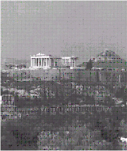
viver militar dos espartanos.
Atenas era uma cidade j�nica,
situada na pequena pen�nsula da �tica. Desde os tempos dos antigos,
seus habitantes se entregavam a navega��o mar�tima e, em contato com
outros povos de civiliza��es adiantadas aprenderam e desenvolveram
os elementos de uma vida espiritual e materialmente superior.
As
tradi��es davam a cidade como fundada por C�crope, colono eg�pcio.
Um dos seus monarcas lend�rios teria sido o her�i Teseu. O �ltimo
desta fase foi Codro que sacrificou a pr�pria vida para salvar o
pa�s da invas�o dos d�rios. A fim de honrar-lhes a mem�ria, os
atenienses aboliram a realeza, declararam que ningu�m possu�a
dignidade bastante para substituir um rei com aquelas qualidades.
A organiza��o social de Atenas
A popula��o de Atenas dividia-se em tr�s classes: cidad�os,
metecos e escravos.
A cidadania era um privil�gio que se
adquiria pelo nascimento. Somente filhos de pai e m�e
atenienses se reservava o direito de serem cidad�os. Os estrangeiros
e seus descendentes, domiciliados em Atenas, formavam a classe dos
metecos, exclu�dos, como os escravos, da vida pol�tica. Diz-se em
resumo, que em Atenas, todos cidad�os tinham direitos pol�ticos, mas
nem todos habitantes eram cidad�os.
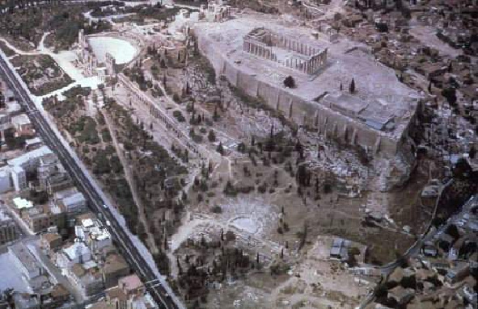
Acr�pole de Atenas
- Vista a�rea
A organiza��o pol�tica de Atenas
Tal como nas demais cidades da H�lade, havia em Atenas a classe
dos aristocratas, os eup�tridas (bem nascidos), como ali eram
chamados. Estes, apos a morte de Codro, elegeram um magistrado
vital�cio, com o t�tulo de Arconde, respons�vel pelo governo, mas
despojado das prerrogativas reais. Mas tarde, tornaram aquele cargo
tempor�rio, limitando-o a dez anos de mandato. Por fim, o Arcontado
foi anual e passou a ser exercido por nove arcondes, um dos quais
chamado arconde-rei, encarregado das fun��es religiosas.
Ao lado
do Arcontado, com poderes administrativos militares e religiosos,
funcionava o Aer�pago, assembl�ia ou conselho formado pelos
ex-arcondes, com poderes judici�rios e tamb�m pol�ticos.
As primeiras leis escritas
O governo dos nobres era opressor e indiferente � sorte do povo.
Com o tempo, formou-se uma nova classe social: a dos comerciantes e
de industrias que desejavam participar dos atos de governo.
Uniram-se, por isso, aos demais e deram come�o a uma s�rie de lutas,
visando a melhores condi��es de vida de toda a popula��o. No s�culo
VII a.C., surgiram as primeiras leis escritas, atribu�das a Dr�con e
que se tornaram famosas pela severidade e rigor. era um passo �
frente na conquista dos direitos humanos, embora a maior parte das
coisas se mantivessem praticamente no mesmo estado
anterior.
S�lon
Em 594 a.C., os atenienses elegeram para o Arcontado um dos "sete
s�bios da Gr�cia", S�lon, homem de grande intelig�ncia, que realizou
importante reforma no sentido democr�tico, inspirado no desejo de
favorecer os direitos do povo. Come�o por libertar os devedores
reduzidos � escravid�o, suprimindo o cativeiro por d�vidas; garantiu
a liberdade individual; estabeleceu um imposto progressivo sobre os
rendimentos, para o que dividiu os cidad�os em quatro categorias,
repartindo entre estas os cargos e os direitos em forma proporcional
e eq�itativa.
Os poderes do governo foram divididos em quatro
corpos pol�ticos: o Arcontado, o Bul�, a Ecl�sia e o Aer�pago.
Para o primeiro, s� podiam ser eleitos os cidad�os da primeira
classe, isto �, os mais ricos; o Bul�, era um conselho de 400
cidad�os, eleitos entre os membros das primeiras tr�s classes, a
Ecl�sia, ou assembl�ia do povo , pertenciam vinte mil cidad�os,
incluindo-se os que nada possu�am. O Aer�pago manteve a estrutura
anterior.
Pis�strato
As reformas de S�lon originaram descontentamento: os eupatridas
se viram prejudicados e o povo achou que devia ter mais direitos.
Das lutas aproveitou Pis�strato, jovem endinheirado que, apoiado no
partido popular, apoderou-se do governo.
Deu-se- o qualificativo
de tirano, que, como sabemos, designava os que se elevavam ao poder
por meios irregulares.
Pis�strato administrou com justi�a e
acerto, respeitando as leis de S�lon e procurando melhorar as
condi��es dos menos favorecidos. A ele se atribui a iniciativa de
determinar a compila��o das obras de Homero. quando morreu,
sucederam-lhe os filhos Hiparco e H�pias: aquele foi morto numa
conjura��o e este foi obrigado a fugir, por for�a de uma subleva��o
de nobres atenienses (510 a.C.).
A democracia ateniense
O governo de Atenas coube, depois de algumas lutas, a Cl�stenes,
homem de origem aristocr�tica, mas de tend�ncias populares. Nomeado
arconde realizou reformas pol�ticas de grande import�ncia, aboliu a
divis�o de classes e permitiu que todos os domiciliados em Atenas
fossem considerados cidad�os. Depois dividiu politicamente o
territ�rio dez tribos com direitos iguais e deu � Ecl�sia maior
qualidade de poderes.
Para evitar influ�ncias de indiv�duos que
pudessem atentar contra a liberdade instituiu o ostracionismo,
vota��o realizada pela Ecl�sia, que tinha por fim exilar, pelo
prazo de dez anos, os que visem a incidir naquela suspei��o.
A
partir de 503 a.C.,data em que tivessem aplica��o as reformas de
Cl�stenes, o Estado ateniense passou a ser uma democracia, embora
estivesse longe se assemelhar-se as democracias de nosso tempo
(havia ainda muita desigualdade, mais do que a existente hoje).
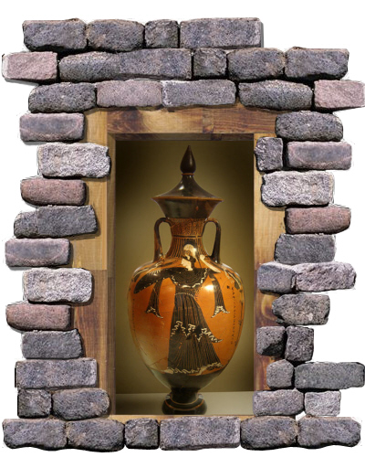
�nfora em figura-negra com representa��o da deusa
Atena |